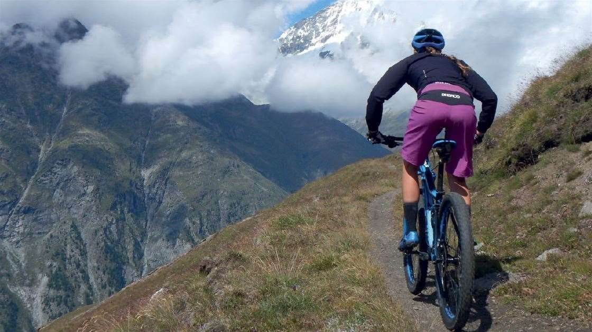

Swiss-Cantons
Welcome to our Swiss-Cantons page. You will find info for all the cantons in Switzerland.

Switzerland
Cantons and Cities
There are 26 cantons (Federal states) of the Swiss confederation. Jungfrau, Chapel Bridge, Rhine Falls, Rigi, Lake Brienz, Zoo Zürich and many more places
to must visit during your Swiss tour.
Best dining in the restaurants situated on the shore of the island with the exotic continental
taste and a relaxing mountainous view.

Outdoor activities
Locarno is an Italian-speaking resort city in southern Switzerland, on Lake Maggiore at the
base of the Alps. It's known for its sunny climate and beautiful streets
with open bars and restaurants.

Mountain Biking Trails
Swiss Alps offers adventure-seekers the most intense mountain bike holidays they could
wish for with over 100kms in trails around the Alps.
Switzerland
Cantons and Cities
There are 26 cantons (Federal states) of the Swiss confederation. Jungfrau, Chapel Bridge, Rhine Falls, Rigi, Lake Brienz, Zoo Zürich and many more places
to must visit during your Swiss tour.
Best dining in the restaurants situated on the shore of the island with the exotic continental
taste and a relaxing mountainous view.
Outdoor activities
Locarno is an Italian-speaking resort city in southern Switzerland, on Lake Maggiore at the
base of the Alps. It's known for its sunny climate and beautiful streets
with open bars and restaurants.
Swiss Alps offers adventure-seekers the most intense mountain bike holidays they could
wish for with over 100kms in trails around the Alps.
Book now
Go, Explore the world. The earth is all we have in common.
Time to see the world. Travel to make memories all around the world.